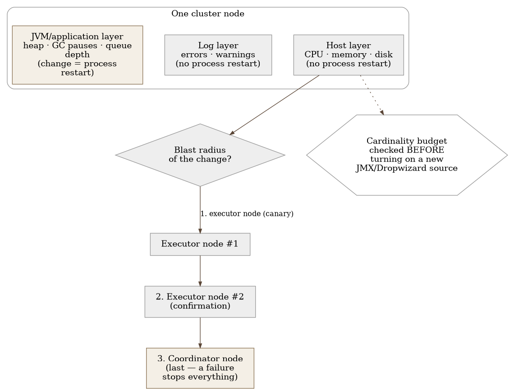
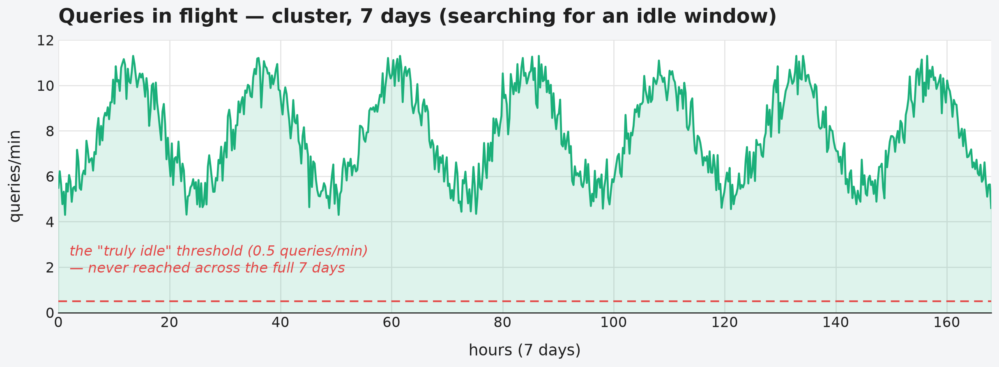

Chapter 19 — Self-managed distributed systems (a Dremio-style cluster)
An orchestra doesn't sound good because each musician individually plays loudly. It sounds good because three separate things work together: every instrument has to be tuned and in proper condition (a violin that's out of tune ruins the impression no matter how well the rest of the orchestra plays), the score has to be exactly what's being played at that moment (a conductor working from the wrong score won't notice until the music falls apart), and finally, the audience actually has to hear what was played — the hall's acoustics, the microphones, the amplifiers are a third, entirely separate layer that can ruin a perfect performance before it ever reaches an ear. A conductor who manages only one of those three things is managing the wrong third of the orchestra. And when the hall's management proposes disbanding the orchestra on days without a concert to save on salaries, the conductor knows something management doesn't: an orchestra that has to reassemble itself every time will never sound like an orchestra that has been playing together for years. Sometimes it's cheaper to keep it assembled, smaller, than to disband it and gather it again.
19.1 The question this chapter answers
A cluster that a team installs, configures, and keeps alive itself — with no provider managing it for them — needs monitoring at three levels at once, each with a different cost of downtime and a different cost of restarting. How do you keep those three levels separate and still read them together, and why does the most obvious lever for saving money — turn it off when it's not in use — simply not work here?
19.2 How it was done — a practical overview
Triple signal per node
Every node in the cluster the implementation tracks carries three independent layers of observation, each with a different cost of restart if a signal from that layer shows a problem:
- Host layer — CPU, memory, disk, network of the machine the node itself runs on. A problem here (a full disk, memory at the edge) doesn't need a process restart to be reported — it's visible from the outside, independent of whether the application is even alive.
- Log layer — the process's text output: errors, warnings, exception traces. Like the host layer, a log gets written regardless of whether the application is healthy at that moment — a process crashing from an error still manages to write down why, in the last second of its life.
- JVM and application metrics — heap memory, garbage collection pauses, the number of active queries, the queue depth. This layer requires a collection agent to be embedded in the process itself, or the process to export metrics actively — which means that changing this layer almost always requires a process restart to take effect, unlike the first two layers, which can be changed without touching the application.
This difference in the cost of change — two layers can be adjusted without a restart, the third almost never — directly dictates the order in which any new check or threshold gets introduced: host and log first, and only then, more carefully, the JVM/application layer.
Ordering changes by blast radius
When the implementation rolls out any change to the cluster — a new version, a new alert threshold, a new configuration — the order in which the change spreads across nodes is deliberately ranked by how much damage it does if something goes wrong:
- One executor node, the smallest blast radius — if something breaks, the cluster keeps running on its remaining capacity.
- A second executor node, to confirm the first result wasn't a fluke.
- The coordinator node, last — because its failure hits the entire cluster at once, not just one slice of capacity.
This order isn't an arbitrary choice — it directly reflects the topology: executor nodes are interchangeable and losing one is absorbed, the coordinator node is not, and losing it stops everything.
Measure before assuming: does auto-shutdown even work here
The standard lever for cutting costs on always-on clusters is automatic shutdown during periods of low activity. The implementation measured this, rather than assuming it — and found that the cluster it tracks almost never has a real window of inactivity long enough to justify shutting down: even in the hours of lowest activity, enough queries come in that shutting down would mean either rejecting those queries or a delay measured in minutes while the cluster spins back up. Instead of shutting down, the lever that actually proved effective was sizing — reducing the number and type of nodes based on measured, actual consumption, not on an assumed peak load. This is an important distinction: observation didn't just change a dashboard, it changed the decision — from "when do we shut down" to "how much do we actually need running."
Cardinality budget before turning on a new metrics source
Before any new node-level or JVM-level exporter gets turned on, the implementation first estimates how many new time series that source brings in — because certain standard metrics formats (particularly ones derived from a JMX attribute tree) can generate metric families with histogram buckets per thread, per connection, or per query, which, without care, explode the series count far faster than the configuration alone would suggest. One concrete case from the implementation: turning on a single seemingly harmless metrics source, on its own, doubled the total number of active series in the cluster before anyone got around to limiting it — discovered only once the monthly metrics bill spiked, not before.


19.3 Analytical section — why the standard lever doesn't work here
The FinOps standard ranks the levers, but warns of its own limits
The official FinOps recommendation for controlling compute cost ranks the standard levers in a customary order of application: first, rightsizing based on measured consumption (because it requires no architectural change), then autoscaling for workloads that are genuinely variable and track demand, and only then scheduled shutdown — explicitly described as a lever for development and test environments outside working hours, not for production systems with constant load. This lines up exactly with the implementation's finding: shutdown as a standard recommendation still exists, but by its own definition it's limited to environments with no obligation to run continuously — which this cluster, by its measured traffic pattern, simply isn't.
The vendor itself confirms: shutdown is for occasional, not constant, load
The official documentation for the managed version of the same system treats automatic stopping as a first-class feature — but only for elastic resources configured with a minimum of zero permanently active instances, and it explicitly recommends the opposite (at least one instance always active) in order to "guarantee low query execution latency." This is a direct, official confirmation that automatic shutdown isn't a universally good practice — it's a choice that depends on the shape of the workload, and the vendor of the system says so itself. For a self-managed system, with no elastic layer to automatically absorb a restart, the documentation goes further: starting and stopping nodes is described as a strict, manual, ordered procedure — with no built-in mechanism for preserving state or automatic rebalancing. The mere existence of such a strict, manual sequence is indirect but clear confirmation that shutdown here is treated as operationally risky, not as routine savings.
The standard three-layer pattern exists, just under a different name
There's no single canonical, named "three-layer" standard in the observability literature — but the pattern itself (host metrics → JVM/runtime metrics → log/application signal, as three separate categories) shows up regularly in monitoring guides for exactly this class of system: distributed, JVM-based clusters with coordinator and executor roles. This is a narrower and more accurate parallel to the implementation than the more general split into "metrics, logs, and traces" that's often cited as the observability standard — that split is based on data type, not on the system layer being observed, and it doesn't map directly onto the host/JVM/log distinction the implementation uses.
Cardinality budgeting as a documented, concrete risk
The official recommendation before rolling out a new exporter is to first get visibility into existing series and identify "high-cardinality, low-value" metrics before adding new sources — with concrete numbers showing that even common exporters carry, by default, hundreds to a thousand series, not all of which are worth their cost. This directly confirms the implementation's finding: JMX/Dropwizard attribute trees can expose attributes per thread, per connection, or per query identifier, which turn into unbounded cardinality exactly when they're scraped without an explicit allowlist.
Counterfactual scenario: what the textbook approach would have done
Imagine a team that, without measuring, applied the "standard" recommendation: automatic shutdown outside working hours, by analogy with development environments. The first few nights would probably pass without a noticeable problem — quiet enough for the decision to be declared a success. But the moment even a rare query showed up in that "quiet" window, the user would wait minutes for the cluster to spin back up — and without the measurement the implementation actually carried out, nobody would know whether there were enough such queries for shutdown to be worth it at all, or whether it had simply moved the cost from the infrastructure bill to the cost of a user's patience while they wait.
Let's go back to the orchestra from the start of the chapter. The hall management that proposes disbanding the orchestra between concerts is looking at only one line of the budget — salary for days with no performance. The conductor who rejects that idea isn't defending the musicians' comfort; they're defending something harder to see on a spreadsheet: an orchestra that has to reassemble itself every time loses its cohesion, and that lost cohesion has a cost that doesn't show up until a bad performance does. The real saving wasn't in disbanding — it was in the orchestra being exactly as large as it actually needs to be, no more and no less, and staying assembled.
19.4 Rules collected from this chapter
- Track a self-managed cluster through three independent layers — host, log, JVM/application metrics — and keep in mind that changing the third layer almost always requires a process restart, while the first two don't.
- Roll out changes by blast radius: interchangeable executor nodes first, the coordinator node last — because its failure stops the whole cluster, while the failure of one executor node is absorbed by the remaining capacity.
- Don't assume automatic shutdown during inactivity works — measure whether a real window of inactivity even exists before introducing that lever, because a workload with no real gaps makes shutting down more expensive than staying on.
- When real inactivity doesn't exist, the lever for cost is sizing, not scheduling — reduce capacity based on measured consumption instead of switching it on and off.
- Estimate how many new time series each new metrics source brings before turning it on, especially for JMX/Dropwizard families — they can double total cardinality before anyone gets around to noticing.
19.5 Exercise for the reader
Find one system in your environment that currently has automatic shutdown or scale-to-zero during periods of "low activity," where that decision was made without actually measuring the inactivity window. Pull a seven-day graph of its activity and check: does a window of inactivity actually exist, long enough to justify shutting down — or is the assumption of a "quiet period" just an assumption?